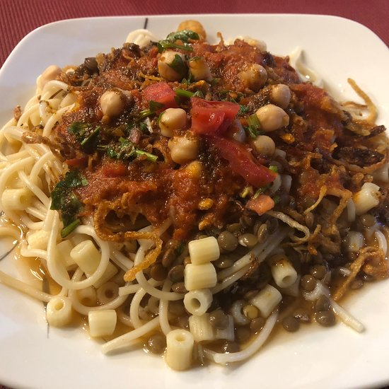

Egyptian Koshary

Koshary is a famous Egyptian street food.
Koshary is pretty much Egypt's staple street food. You can find anything from a 2-story koshary restaurant to a man with a cart on the side of the street.
It has no meat, but even the biggest of carnivores don't miss it. Filling and healthy, come see Egypt's most famous dish!
Ingredients
- vegetable oil
- 2 cups uncooked white rice
- 3 cups water
- salt
- 1 package uncooked elbow macaroni
- 1 cup beluga lentils, soaked in water
- 5 onions, minced
- 2 cloves garlic, minced
- 3 tablespoons distilled white vinegar
- 4 ripe tomatoes, diced
- half cup tomato paste
- ground black pepper
- ground cumin
Steps
- Heat 1 tablespoon vegetable oil in a saucepan over medium-high heat. Stir in rice; continue stirring until rice is coated with oil, about 3 minutes. Add 3 cups water and 1 teaspoon of salt. Bring to a boil; reduce heat to low, cover, and simmer until the rice is tender and liquid has been absorbed, 20 to 25 minutes.
- Fill a large pot with lightly salted water and bring to a rolling boil over high heat. Stir in the macaroni, and return to a boil. Cook the macaroni uncovered, stirring occasionally, until the it has cooked through, but is still firm to the bite, about 8 minutes. Drain well in a colander. Return macaroni to cooking pot, cover and keep warm.
- Soak lentils for 30 minutes. Drain and rinse; drain again. Bring 2 cups water to a boil in a pot and stir in lentils. Bring to a boil; cover and reduce heat to low. Simmer until lentils are tender 15 or 20 minutes. Stir in 1/2 teaspoon salt.
- Heat 1 tablespoon vegetable oil in a large skillet over medium-high heat. Cook the onions in the oil, stirring often, until they begin to brown, 10 to 15 minutes. Onions should be a nice caramelized brown color. Add garlic and cook another minute. Remove from pan, drain on a paper towel-lined plate.
- Place half of the onion mixture into a saucepan. Mix in the vinegar. Add the chopped tomatoes and tomato paste, black pepper, 2 1/2 teaspoons salt, cumin, and cayenne (if using). Bring to a boil then reduce heat to medium-low and simmer about 12 minutes.
- Serve by placing a spoonful of rice, then macaroni, and then the lentils on serving plates. Sprinkle with some of the browned onions, then top with tomato sauce.